Overskrift inde i popover boks - Gestalt
H2 pop up
DE 5 GESTALT-LOVE
 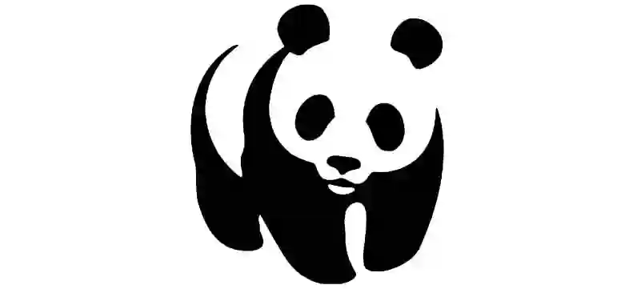
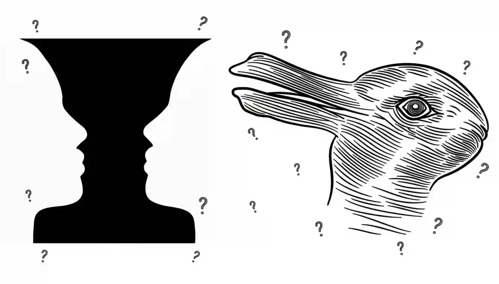
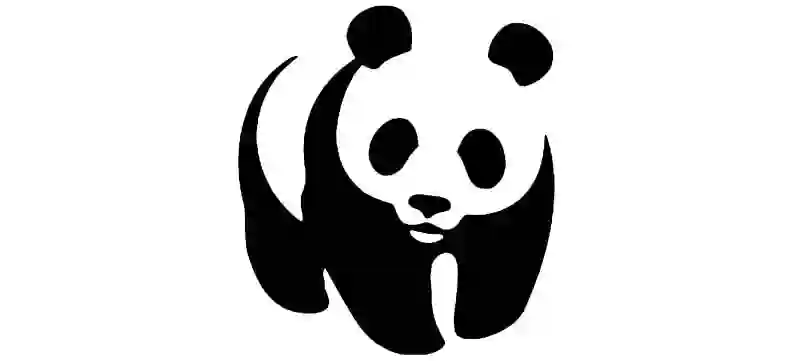
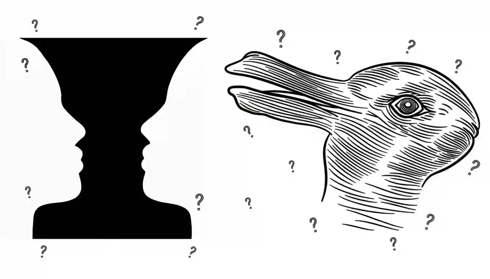
Det første tema efter introugen var grundlæggende web. I temaet blev vi introduceret til, hvordan man opsætter kode i VS Code, hvordan Github og repositories fungerer samt vores mappe-stier rigtig skulle opsættes og hvorfor det var så vigtigt, at de sad korrekt til at starte med.Vi lærte om wireframes, opsætning af disse og hvordan hver site tænkt, bør have en wireframe med 'classes', så det er nemmere at kode, når man kommer hertil, og hvis man har samme grid-opstilling, herved blot kan bruge samme class flere steder. Hertil lærte vi basis indenfor HTML, samt brugen af CSS til styling af et site, og hvordan vi i form af grids, kunne rykke 'bokse' eller billeder rundt på et site.
- HVAD LÆRTE VI - Gestalt-principperne kommer fra tysk og opstod i
1920'erne. Det står for vores opfattelsesevne, når vi kigger på
visuel formidling, og hvordan vi nogle gange ser hele enkelte
elementer, før den store helhed og omvendt. Det er derfor vigtigt
altid, at have disse principper i baghovedet, når man er igang med
at lave et professionelt site.
+ I temaet lærte vi om typografier, farver og hvordan æstetik,
funktionalitet samt teknologi mødes, og hvordan vi nogle gange kan
blive begrænsede, når det kommer fra design-processen og til
kodningen. Typografier eller ord kan nogle gange lede til
assumptions, hvorpå det er vigtigt at repræsenterer sit emne og
definere sin målgruppe, hvorpå vi nemmere kan finde den rette
typografi, farve, kanter samt tone, f.eks. I form af Seriffer eller
Sans-Seriffer. Vi analyserede forskellige sites, (The Guardian vs.
Berlingske), hvor vi lærte de forskellige måder, at tale til sin
målgruppe. Typografier eller ord kan nogle gange lede til
assumptions, hvorpå det er vigtigt at repræsenterer sit emne og
definere sin målgruppe, hvorpå vi nemmere kan finde den rette
typografi, farve, kanter samt tone, f.eks. I form af Seriffer eller
Sans-Seriffer.
DE 5 GESTALT-LOVE
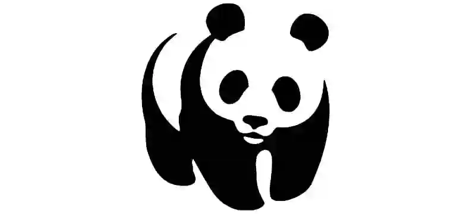
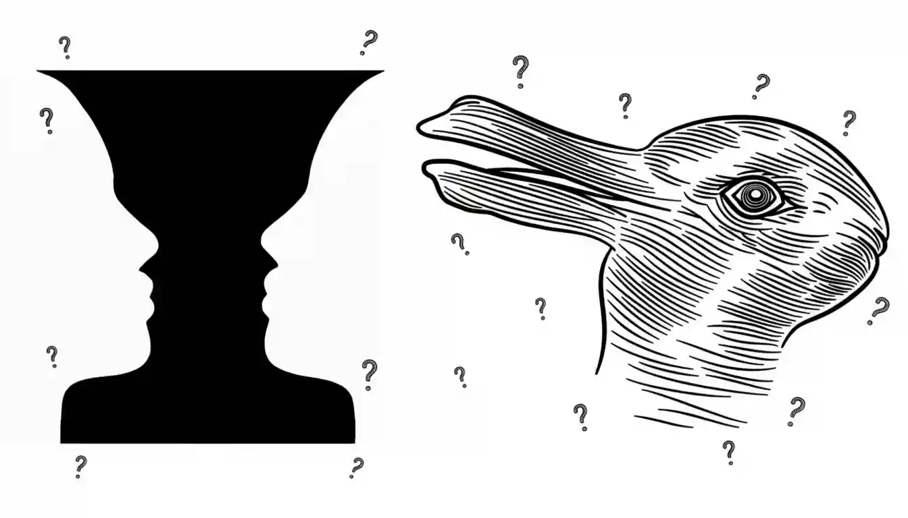
På websites bruger man forskellige billedformater alt efter behov. JPEG/JPG er godt til fotos, fordi det fylder lidt, men mister en smule kvalitet. PNG bruges til grafik, logoer og elementer med gennemsigtighed, da kvaliteten er højere. WEBP er vores foretrukne, da dette er et moderne format, der kombinerer høj kvalitet med meget små filstørrelser, og derfor er ideelt til både fotos og grafik på websites. SVG er et vektorformat, som egner sig perfekt til logoer og ikoner, fordi det kan skaleres uendeligt uden tab af kvalitet.
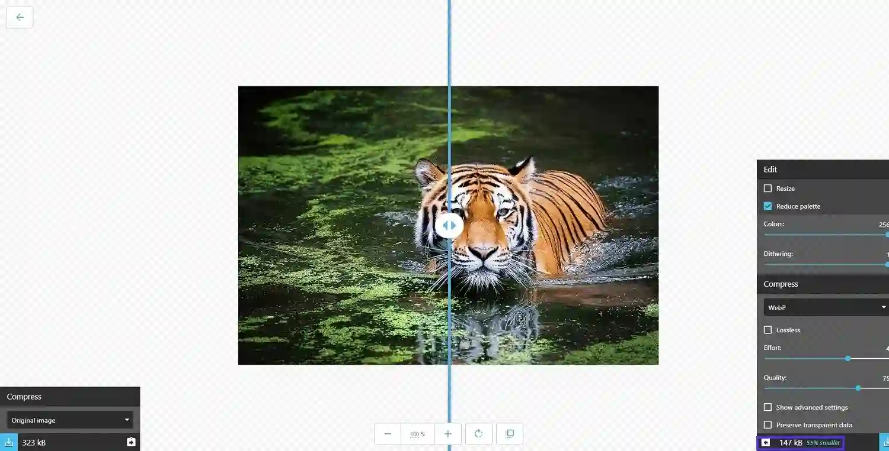BILLEDEFORMATER I BILLEDER ELLER TEGNINGER
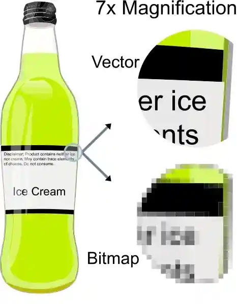I tema 2 lærte vi kodning 101. Vi lavede hertil også vores studiestartsprøve, hvor et af de større fokuspunkter var at kunne lave display i grids.
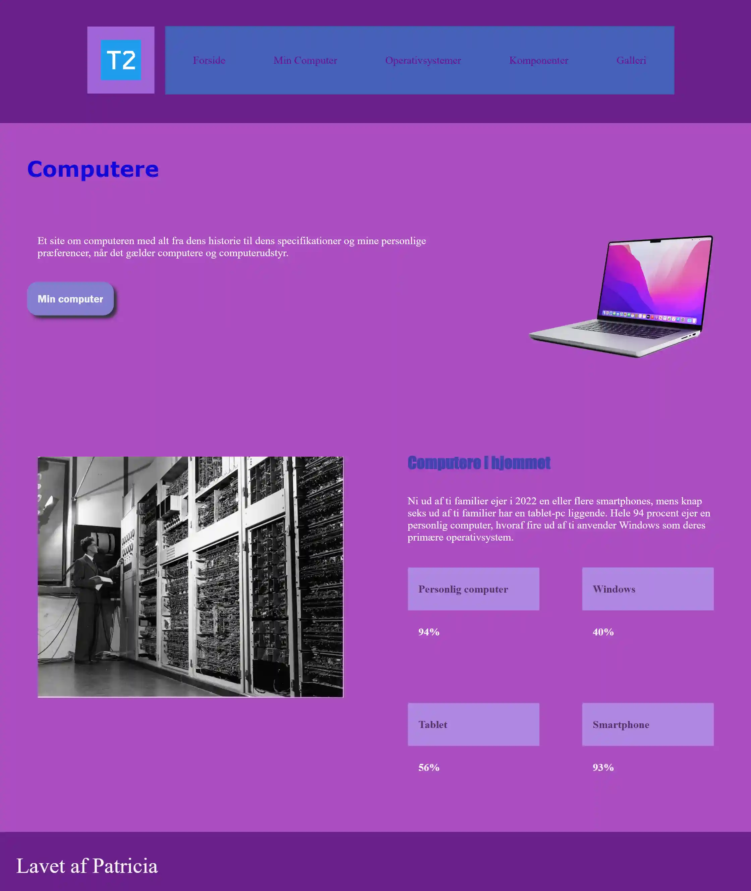Studiestart screenshots og Figma dumps Hertil blev vi introduceret for 'Squoosh' og de forskellige billede-formater vi ville komme ud fra, samt fik lov at ændre filformater på vores egne billeder i opgaven '24 billeder'.
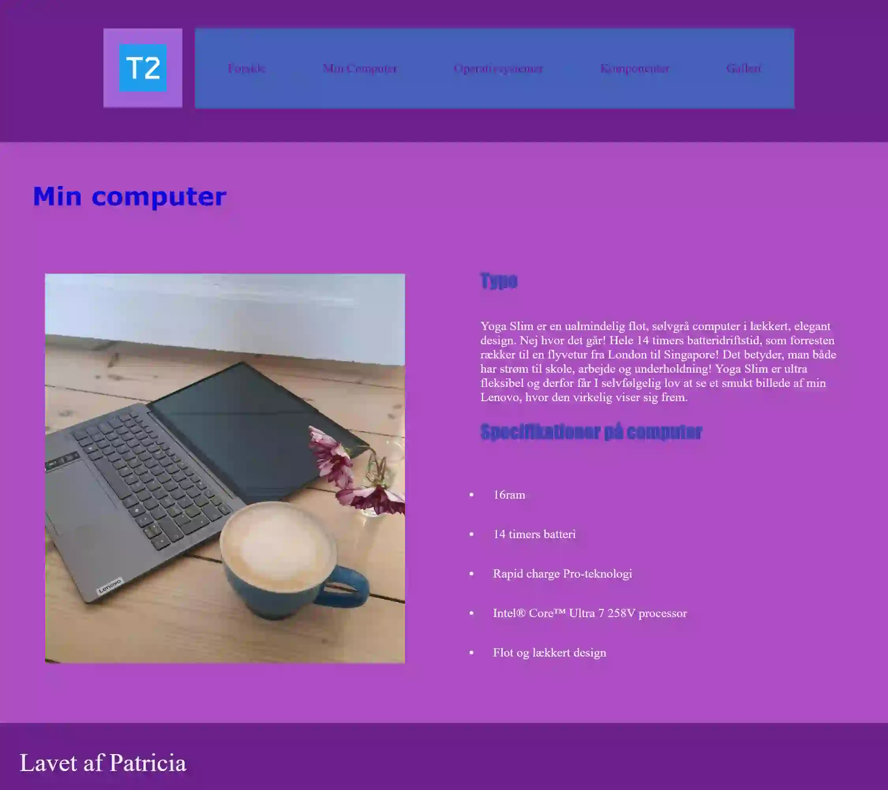 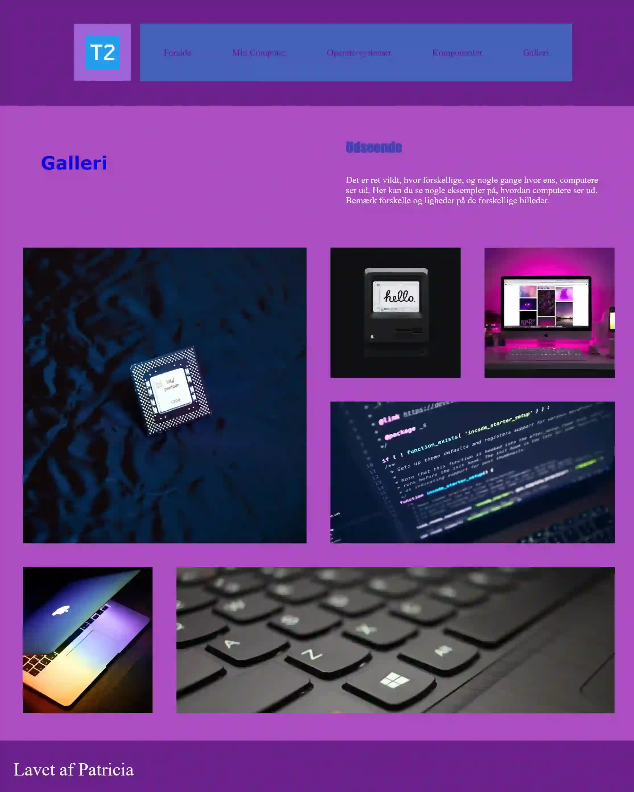
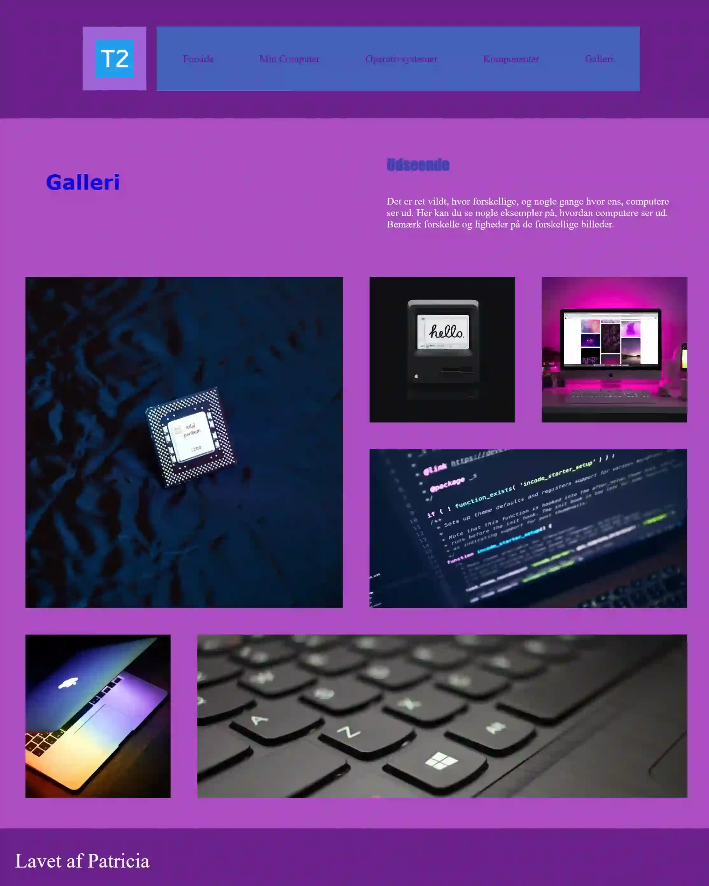